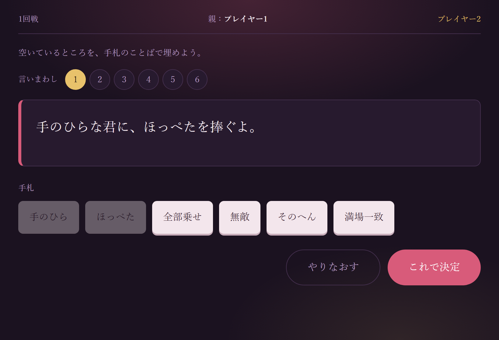
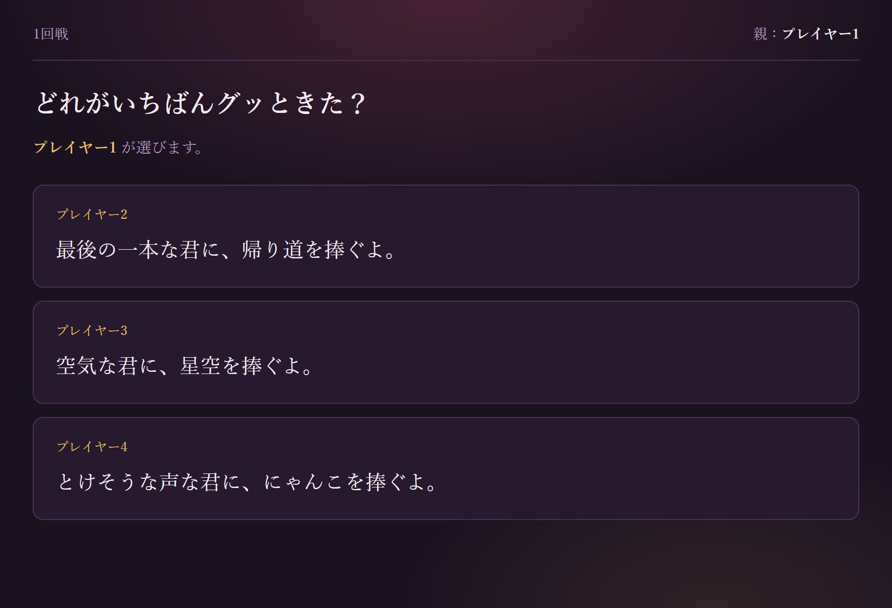
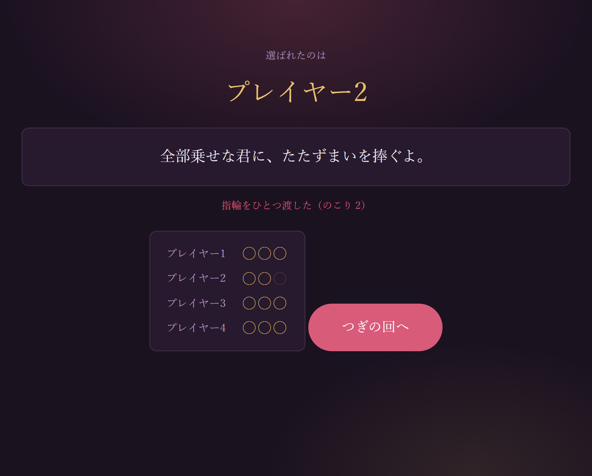

07
D A Y 7 / M A K I N G
ゼロから
作ってみる
新しい文法は1つも出てこない。
今日学ぶのは「作り方」そのものだ。
第7回 ／ 総合制作『プロポーズの言葉を君に捧ぐよ』

今日はコードあんまり書かない。
いちばん地味で、
たぶんいちばん効く回。
いちばん地味で、
たぶんいちばん効く回。
今日は毛色がちがう
コードを覚える日ではない
DAY 1〜6 でやったこと
「これを書くと、こう動く」という部品の使い方。
- タグの書き方
- 色の付け方
- ボタンの反応のさせ方
- 配列の回し方
これはもう、調べれば出てくる知識。
今日やること
「作りたいもの」を作れる形にほぐす手順。
- 何を作りたいのかハッキリさせる
- 必要な機能を言葉にする
- 動きの流れを細かく決める
- 壊れそうな所を先に潰す
- 図にしてから、コードにする
こっちは検索しても出てこない。
身も蓋もない話
コードは、正直AIに書かせても動く。でも
「何を作るか」が決まっていないと、AIにも頼めない。
そこだけは代わりにやってもらえない、という話。
そこだけは代わりにやってもらえない、という話。
今日の地図
ものを作るときの、いつもの順番
A. 考える
- どんなものを作りたいか
- 欲しい機能を言葉にする
- そのために必要なものを挙げる
B. 固める
- システムの流れを細かく決める
- 問題が起きそうな所を挙げる
- 調べる・AIに相談する
- 図や文で1度まとめる
C. 作る・直す
- 実装する
- 動かしてエラーを潰す
- 見た目・動きを整える
- しばらく触って直す
A に一番時間をかける
初心者ほど「9. 実装する」から始めようとして、途中で止まる。
手が止まる原因は、たいてい技術ではなく「決まっていないこと」。
行ったり来たりでいい
作っている途中で「やっぱりこうしたい」は必ず起きる。
そのたび A に戻ってOK。
STEP 1 ／ 考える
どんなものを作りたいか
今回の題材
実際にあるパーティゲーム『たった今考えたプロポーズの言葉を君に捧ぐよ。』を、 1台のパソコンで遊べる形にする。
ひとことで言うと ──
「手札のことばを言いまわしに当てはめて
プロポーズの文を作る。親がいちばんグッときた文を選ぶ」
プロポーズの文を作る。親がいちばんグッときた文を選ぶ」
カードの文言そのものは商品のものだから、そのまま使わない。
仕組みだけ真似て、ことばは自分たちで作る。これは守ること。
先に決めておくこと
- 誰が遊ぶ → 3〜6人。その場にいる人
- どこで遊ぶ → 1台をまわす
- 1回どれくらい → 10分くらい
- 勝ち負け → 指輪を3つ渡しきった人の勝ち
ここが決まると規模が決まる
「1台をまわす」→ 通信は要らない。
「10分」→ 指輪は3つで十分。
決めないと、作る量が無限に膨らむ。
「10分」→ 指輪は3つで十分。
決めないと、作る量が無限に膨らむ。
STEP 2 ／ 考える
欲しい機能を、ぜんぶ書き出す
「できてほしいこと」を並べる
- 人数と名前を決められる
- 手札のことばが配られる
- 言いまわしを選べる
- ことばを穴に入れて文が作れる
- やりなおせる
- 全員ぶんの文が並ぶ
- 親が1つ選べる
- 選ばれた人の指輪が1つ減る
- 3つ渡しきったら勝ち
やらないことも決める
・通信対戦 ・カードの絵 ・BGM ・セーブ
「やらない」と書いた瞬間、作る量が半分になる。 あとから足せばいい。
「やらない」と書いた瞬間、作る量が半分になる。 あとから足せばいい。
主語をつけて書く
「カードが配られる」ではなく「誰に」配られるのか。
「選べる」ではなく「誰が」選ぶのか。
ここが曖昧だと、あとで必ず作り直しになる。
「選べる」ではなく「誰が」選ぶのか。
ここが曖昧だと、あとで必ず作り直しになる。
紙に書く
画面で書くと、消したり整えたりに気を取られる。
箇条書きで、汚くていい。
STEP 3 ／ 考える
機能を、習った技術に対応づける
| やりたいこと | 画面に要るもの | 使う技術 |
|---|---|---|
| 言いまわしが6種類ある | 番号ボタン | 配列 ／ DAY 6 |
| ことばが配られる | 手札のカード | 配列 ＋ Math.random ／ DAY 5 |
| ことばを穴に入れる | 組み立て中の文 | replace で置きかえ |
| 今の状況を覚えておく | — | game オブジェクト ／ DAY 6 |
| 全員ぶんの文が並ぶ | 発表のリスト | 配列に push ／ DAY 6 |
| 親が1つ選ぶ | 押せるカード | addEventListener ／ DAY 5 |
| 指輪が減る | 指輪の表示 | 数を引く ＋ if |
| 画面が切りかわる | 6つの画面 | classList で出し入れ ／ DAY 5 |
全部 DAY 1〜6 の範囲
新しい文法は1つも要らない。知らない技術が出てこないと分かると、
作る前の怖さが半分消える。
ここで「知らない」が出たら
それが今日調べる対象。作りながら探すより、先に洗い出しておくほうが早い。
STEP 4 ／ 固める
1回ぶんの流れを、細かく書く
1回戦のあいだに起きること
- 親を決める（最初は1番の人）
- 親以外の人へ、順番に画面をわたす
- その人に手札を6枚くばる
- 言いまわしを選び、ことばを2つ入れる
- 決定したら、次の人へ
- 全員できたら、まとめて発表
- 親がいちばんいいものを選ぶ
- 選ばれた人の指輪を1つ減らす
- 0になった人がいたら終わり
- いなければ親を隣に送って、1へ
「順番に画面をわたす」を1行入れる
1台で遊ぶゲームは、誰の番かを画面が言ってくれないと必ず混乱する。
引きつぎの画面を1枚はさむだけで解決する。
②で「親以外」と書けているか
親も作れてしまうと、自分の文を自分で選べる。
ここは流れを書く段階でしか気づけない。
番号を振る
あとで「⑦がまだ」と言えるようになる。
この番号が、そのまま関数の名前になっていく。
STEP 5 ／ 固める
壊れそうな所を、先に潰す
| 起きそうなこと | どうなる | 先に決めておく |
|---|---|---|
| 同じことばが手札に2枚くる | 同じ語を2回使えてしまう | 配るとき重複をはじく |
| 親も文を作れてしまう | 自分で自分を選べる | 順番を送るとき親を飛ばす |
| 名前を入れずに始めた | 名前が空っぽで誰か分からない | 空なら「プレイヤー1」を入れる |
| 穴が1つしか埋まっていない | ◯◯のまま発表される | 2つ埋まるまで決定を押せなくする |
| 指輪が0より減る | 「のこり -1」と出る | 0になった時点で終わらせる |
| 次の人が前の人の文を見る | まねされる | 引きつぎ画面をあいだにはさむ |
「変なことをする人」を想像する
押しっぱなしにする、空欄のまま進む、同じボタンを連打する。
自分は絶対にやらない操作を、他人は必ずやる。
この表が、そのまま if になる
右の列は全部「〜なら〜する」の形。書いておけば、実装は写すだけ。
STEP 6 ／ 固める
AIには「答え」ではなく「抜け」を聞く
こう聞く
こういうパーティゲームをWebで作る。
・3〜6人、1台をまわして遊ぶ
・手札のことば6枚から2つ選ぶ
・6種類の言いまわしの穴に当てはめる
・親以外の全員が作り、親が1つ選ぶ
・選ばれた人の指輪が1つ減る
・3つ渡しきった人の勝ち
この仕様で抜けているところ、
プレイ中に困りそうなところを挙げて。
・3〜6人、1台をまわして遊ぶ
・手札のことば6枚から2つ選ぶ
・6種類の言いまわしの穴に当てはめる
・親以外の全員が作り、親が1つ選ぶ
・選ばれた人の指輪が1つ減る
・3つ渡しきった人の勝ち
この仕様で抜けているところ、
プレイ中に困りそうなところを挙げて。
→ 「同点はどうする？」「途中でやめたら？」など、 自分では気づかない穴が返ってくる。
「作って」と頼まない
全部書かせると、動くけど自分で直せないものができる。
直せないものは、作ったことにならない。
聞いていいこと
・仕様の抜けを指摘して
・この書き方で合ってる？
・このエラーの意味は？
・もっと短く書ける？
・この書き方で合ってる？
・このエラーの意味は？
・もっと短く書ける？
返ってきたものは疑う
AIは平気で嘘をつく。動かして確かめるまで信じない。
STEP 7 ／ 固める
流れを、図にしてから書く
親を決める
親以外の人へ画面をわたす
手札を6枚くばる
言いまわし＋ことば2つで文を作る
まだ作っていない人がいる？
いる
次の人へ
いない
全員ぶんを発表
親が1つ選ぶ → 指輪を1つ減らす
指輪が0になった？
なった
その人の勝ち
まだ
親を隣に送る
四角と、ひし形
四角＝やること。丸っこいの＝分かれ道。
この2つだけで、たいていの流れは描ける。
この2つだけで、たいていの流れは描ける。
分かれ道は、そのまま if
if (まだ作っていない人がいる)
if (指輪 === 0)
図が描けていれば、あとは訳すだけ。
if (指輪 === 0)
図が描けていれば、あとは訳すだけ。
紙でいい
ツールを探しはじめると、そこで1時間溶ける。
ノートに手書き5分で十分。
C H A P T E R / 0 2
図を、コードに訳す
ここからが実装。
作る順番も、実は決まっている。

実装の順番
データ → 表示 → 操作 → 演出
- データを決める（言いまわしの配列・ことばの配列・game）
- 表示だけ作る（文と手札が出る。まだ押せない）
- 操作を付ける（カードを押す、決定、親が選ぶ）
- 演出を足す（色、浮くカード、引きつぎ画面）
逆順にやると地獄
先に見た目を作り込むと、データの形を変えたときに
全部作り直しになる。
見た目は最後。ずっと素っ気なくても、我慢。
各段階で必ず動かす
①のあと console.log(WORDS)
②のあと 手札が並ぶか目で確認
③のあと 実際に1回戦プレイ
4つ全部書いてから初めて開く、は絶対にやらない。
②のあと 手札が並ぶか目で確認
③のあと 実際に1回戦プレイ
4つ全部書いてから初めて開く、は絶対にやらない。
「動くもの」を常に手元に置く
途中でどれだけ不格好でも、動いている状態を保ちながら進める。
そうすれば、壊れたとき「さっき足した部分」が犯人だと即分かる。
実装 ①
ことばと、言いまわしを並べる
データが先、画面はあと
この2つが決まれば、残りは全部「描き直す」だけになる。
逆に、ここが雑だとあとで必ず作り直す。
実装 ②
ランダムに6枚、ただし重複なし
STEP 5 の表が、そのままここに来た
「同じことばが2枚くる」→「配るとき重複をはじく」。
先に書き出したから迷わず書ける。考えながらだと already は必ず抜ける。
実装 ③
穴に、ことばをはめる
1つの関数は、1つの仕事
fill() は文を作るだけ。画面には触らない。
分けておくと、あとで直す場所が一発で分かる。
実装 ④
分かれ道を if で書く
図の分かれ道が、そのまま if
STEP 7 の「まだ作っていない人がいる？」「指輪が0になった？」が、
そのまま if の並びになっている。図を描いてあれば訳すだけ。
完成
動かしてみる
スタート画面

人数と名前を決める
文を作る

手札を押して穴を埋める
発表

親が1つ選ぶ
結果

指輪が1つ動く
コードは final/propose/ にある
HTML・CSS・JavaScript の3ファイルだけ。全部で 400行ほどだが、
使っている文法は DAY 1〜6 に出たものだけ。読めば必ず分かる。
ここからが本番
1週間、自分で触る
動いた時点では、まだ半分。 しばらく使ってみると、必ず「これ要るな」「これ邪魔だな」が出てくる。
実際に遊んで出てきた話
- 誰の番か分からない → 引きつぎ画面をはさむ
- 入れたことばを戻せない → もう一度押したら取り消し
- 言いまわしが少なくて飽きる → 6種類に増やす
- 指輪の残りが見えない → 全員ぶんを並べて出す
友達に触らせる
自分では絶対に気づけないことが、他人が触ると3分で出てくる。
説明せずに渡して、黙って見ているのがコツ。
「自分以外が触る」目線
説明なしで分かるか？ 押せると分かるか？ 間違えても壊れないか？
ここを考えられる人は、伸び方が変わる。
直して、また触る
これを2〜3周まわしたら完成でいい。
完璧を目指すと、永遠に終わらない。
課題
自分の作品にする
やさしい
- ことばを20個、自分たちのネタに書き換える
- 言いまわしを2つ足す
- 色を好きな配色に
- 勝ったときのセリフを変える
→ 配列を書き換えるだけ
ふつう
- テーマを選んでから配れるようにする
- 穴を3つにした言いまわしを足す
- 手札を1枚だけ引き直せるようにする
- 制限時間を付ける
→ 配列＋ if を少し足す
むずかしい
- 自分でことばを追加できる画面
- 作った文を localStorage に残す
- 名作をあとから読み返せる「殿堂」
- スマホで遊べるようにする
→ game の設計から考え直す
やる前に、必ず STEP 1〜7 を通す
「テーマを選べるようにしたい」と思ったら、いきなりコードを開かない。
何が必要か・何が壊れるかを先に書き出す。今日の型を、そのまま使って。
DAY 7 おわり
今日いちばん持ち帰ってほしいこと
大事なのは、イメージ
どういうものを作りたいか。そのために何が要るか。どう動くのか。
そこさえ決まっていれば、コードは最悪AIでもどうにかなる。
決まっていなければ、誰にも頼めない。
- 作りたいものを言葉にできる
- 機能を分解して、必要な技術に対応づけられる
- 動きの流れを図にできる
- 壊れそうな所を先に挙げられる
- AIに、答えではなく抜けの指摘を頼める
次回 DAY 8 ／ 直す・公開する
F12を使った本格的なデバッグ、エラーの読み方、
そして作ったものをネットに公開する方法。
Firebase の話もここで。
Firebase の話もここで。
宿題（大事）
改造課題を最低1つやってくること。
やさしいレベルで構わない。
「自分で手を入れた」という事実が大事。
やさしいレベルで構わない。
「自分で手を入れた」という事実が大事。